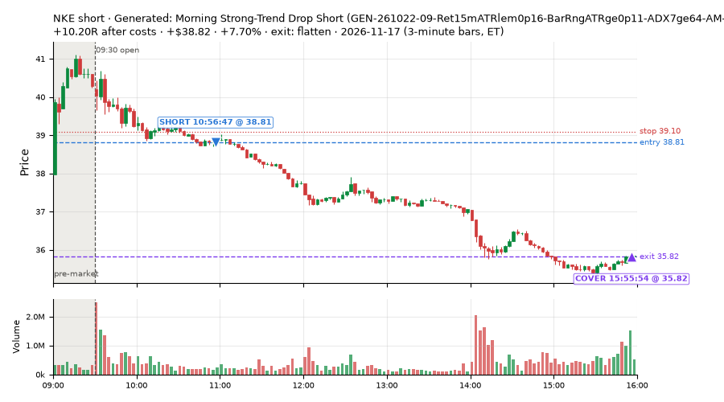
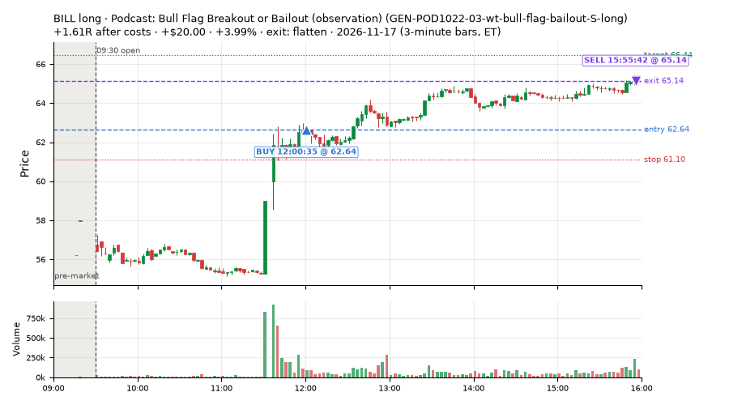
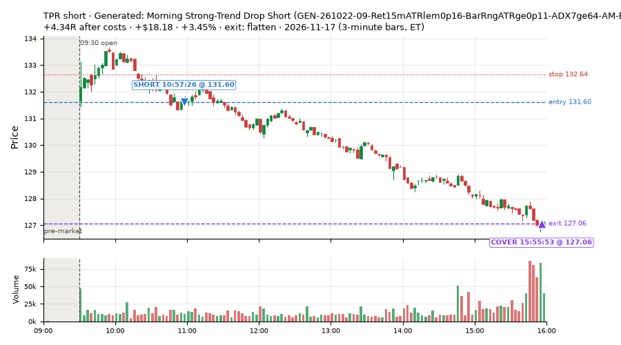
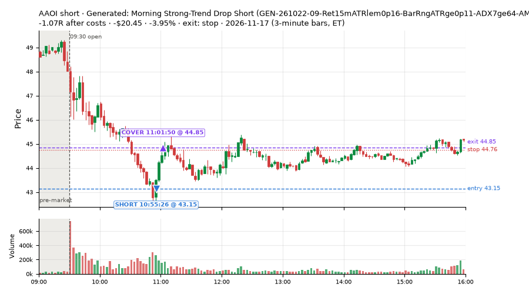
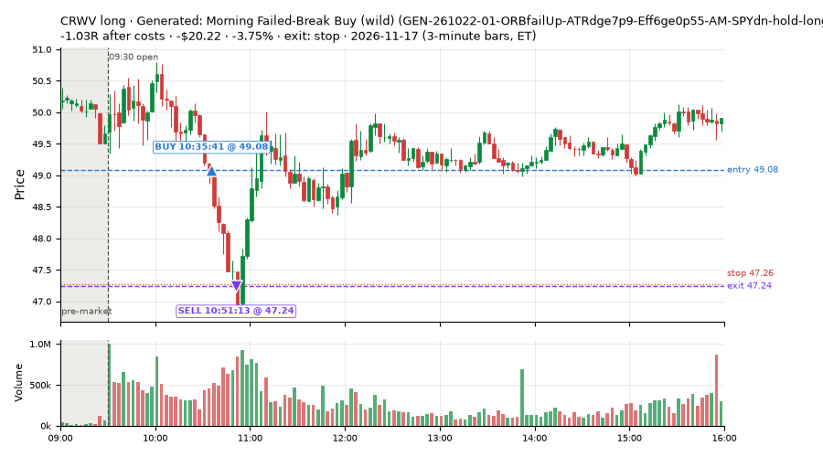
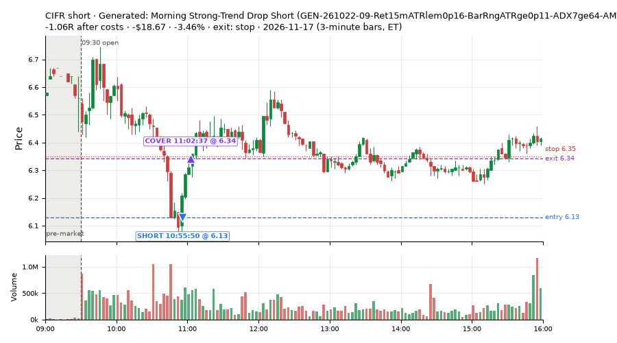
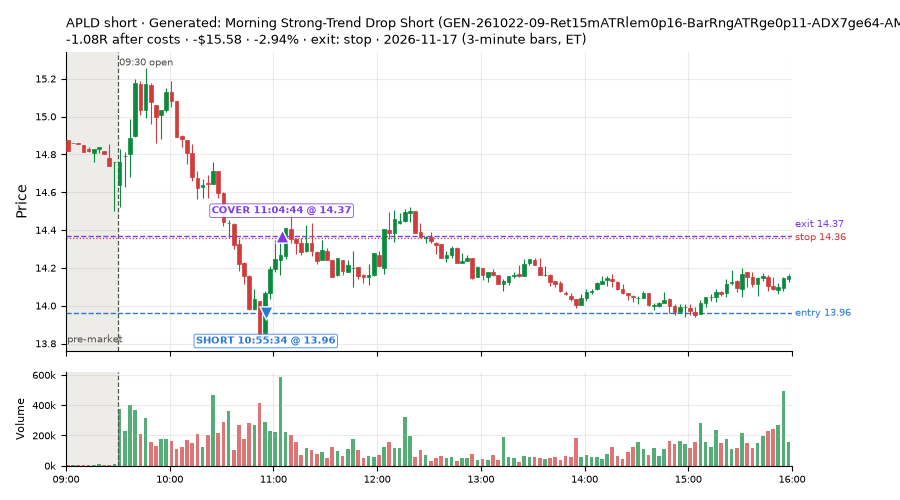
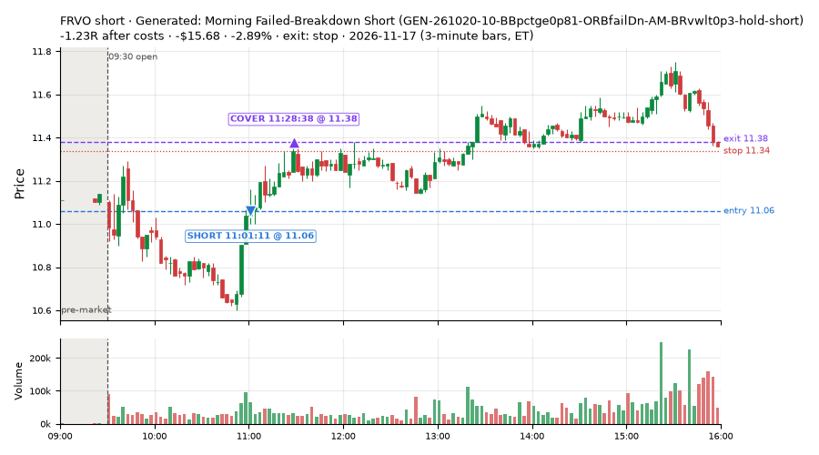

200 trades · win rate 22% · P/L $-342.19
PROBATION: no live setup has passed both locked test periods. 10 owner-directed setups added 2026-10-08 (MarcoFlow top 5 + 5 new), untested live. RW6G1 (RW6 + VWAP band guard) added 2026-10-09, probation.

| Symbol | Setup | Side | In | Out | Entry | Exit | Exit reason | % gained | P/L |
|---|---|---|---|---|---|---|---|---|---|
| NKE | Generated: Morning Strong-Trend Drop Short (GEN-261022-09-Ret15mATRlem0p16-BarRngATRge0p11-ADX7ge64-AM-BRvwlt0p3-hold-short) | short | 10:56 | 15:55 | 38.81 | 35.82 | flatten | +7.70% | $38.82 |
| BILL | Podcast: Bull Flag Breakout or Bailout (observation) (GEN-POD1022-03-wt-bull-flag-bailout-S-long) | long | 12:00 | 15:55 | 62.64 | 65.14 | flatten | +3.99% | $20.00 |
| TPR | Generated: Morning Strong-Trend Drop Short (GEN-261022-09-Ret15mATRlem0p16-BarRngATRge0p11-ADX7ge64-AM-BRvwlt0p3-hold-short) | short | 10:57 | 15:55 | 131.60 | 127.06 | flatten | +3.45% | $18.18 |
| Symbol | Setup | Side | In | Out | Entry | Exit | Exit reason | % lost | P/L |
|---|---|---|---|---|---|---|---|---|---|
| AAOI | GEN-261022-09-Ret15mATRlem0p16-BarRngATRge0p11-ADX7ge64-AM-BRvwlt0p3-hold-short | short | 10:55 | 11:01 | 43.15 | 44.85 | stop | -3.95% | $-20.45 |
| CRWV | GEN-261022-01-ORBfailUp-ATRdge7p9-Eff6ge0p55-AM-SPYdn-hold-long | long | 10:35 | 10:51 | 49.08 | 47.24 | stop | -3.75% | $-20.22 |
| CIFR | GEN-261022-09-Ret15mATRlem0p16-BarRngATRge0p11-ADX7ge64-AM-BRvwlt0p3-hold-short | short | 10:55 | 11:02 | 6.13 | 6.34 | stop | -3.46% | $-18.67 |
| APLD | GEN-261022-09-Ret15mATRlem0p16-BarRngATRge0p11-ADX7ge64-AM-BRvwlt0p3-hold-short | short | 10:55 | 11:04 | 13.96 | 14.37 | stop | -2.94% | $-15.58 |
| FRVO | GEN-261020-10-BBpctge0p81-ORBfailDn-AM-BRvwlt0p3-hold-short | short | 11:01 | 11:28 | 11.06 | 11.38 | stop | -2.89% | $-15.68 |








Signal to fill: median 2s, 90th percentile 4s (200 trades). Bars close each minute; the order follows the bar close.
Best excursion (MFE): median 0.43R; worst (MAE) median 1.05R. 37% of trades never got +0.25R in our favour; 15 reached +1R and still closed at or below 0.
| Symbol | Setup | Best R | Worst R | Closed R |
|---|---|---|---|---|
| URGN | GEN-261020-10-BBpctge0p81-ORBfailDn-AM-BRvwlt0p3-hold-short | +2.92 | -1.00 | -1.05 |
| USMV | GEN-261022-09-Ret15mATRlem0p16-BarRngATRge0p11-ADX7ge64-AM-BRvwlt0p3-hold-short | +2.07 | -1.13 | -1.39 |
| VTI | GEN-261022-09-Ret15mATRlem0p16-BarRngATRge0p11-ADX7ge64-AM-BRvwlt0p3-hold-short | +1.28 | -1.79 | -2.12 |
| NLY | GEN-261022-09-Ret15mATRlem0p16-BarRngATRge0p11-ADX7ge64-AM-BRvwlt0p3-hold-short | +3.98 | -0.66 | +0.70 |
| XLI | GEN-261022-09-Ret15mATRlem0p16-BarRngATRge0p11-ADX7ge64-AM-BRvwlt0p3-hold-short | +1.55 | -1.27 | -1.53 |
| Entry time | Trades | Win | Avg R | P/L |
|---|---|---|---|---|
| 10:30-11:30 | 191 | 21% | -0.67 | $-363.23 |
| 11:30-13:00 | 9 | 44% | -0.07 | $21.04 |
| Setup | Trades | Win | Avg R after costs | Adj R (net of SPY) | Avg R ex-market (all sessions) | P/L |
|---|---|---|---|---|---|---|
| Generated: Midday Oversold Buy (RSI < 22) (GEN-261019-04-EMAdChgge0p15-RSI14le22-MID-BRoplt0p5-t1s1-long) | 6.0 | 50% | +0.03 | +0.08 | +0.13 (beta +1.15, n 112) | $3.33 |
| Generated: Midday Stretched Dip Buy (GEN-261020-09-EMAdChgge0p093-Z12lem0p82-VWAPcrossesle0-MID-QQQltm0p3-holdtr-long) | 18.0 | 67% | +0.02 | +0.11 | +0.32 (beta +1.04, n 174) | $14.96 |
| Generated: Morning Failed-Breakdown Short (GEN-261020-10-BBpctge0p81-ORBfailDn-AM-BRvwlt0p3-hold-short) | 17.0 | 76% | +0.84 | +0.87 | -0.31 (beta -1.20, n 100) | $23.47 |
| Generated: Morning Failed-Break Buy (wild) (GEN-261022-01-ORBfailUp-ATRdge7p9-Eff6ge0p55-AM-SPYdn-hold-long) | 11.0 | 27% | -0.62 | -0.61 | -0.07 (beta -0.34, n 123) | $-88.34 |
| Generated: Morning Strong-Trend Drop Short (GEN-261022-09-Ret15mATRlem0p16-BarRngATRge0p11-ADX7ge64-AM-BRvwlt0p3-hold-short) | 144.0 | 9% | -0.93 | -0.48 | -0.54 (beta -1.59, n 211) | $-305.34 |
| Generated: Late-AM Pop Fade (SPY down) (GEN-261023-06-RSI7le38-Ret15mge0p54-EMAdiffge0p29-LAM-SPYltm0p25-t1s05-short) | 1.0 | 0% | -1.45 | -1.79 | -0.40 (beta +1.60, n 8) | $-7.07 |
| Podcast: Breadth Thrust, Index ETFs (observation) (GEN-POD1022-02-breadth-thrust-index-etf-holdtr-long) | 2.0 | 0% | -1.14 | -0.20 | – | $-3.20 |
| Podcast: Bull Flag Breakout or Bailout (observation) (GEN-POD1022-03-wt-bull-flag-bailout-S-long) | 1.0 | 100% | +1.61 | +1.59 | – | $20.00 |
Market direction (SPY, beta 1) accounted for $-196.53 of today's $-342.19; the rest ($-145.66) came from the setups themselves. Avg R net of SPY: -0.30 (incl. a hedge leg's cost; report only).
23 setups live today. Today: 296 signals, 200 taken, 3 lost because another setup held the symbol (1%). Since 2026-10-19 (22 sessions): 9425 signals, 3917 taken, 281 lost to other setups (3%). Peak open positions today 159 of 300 slots. Earnings blackout removed 329 symbols before scanning.
Simulated playing time (not live): 5483 what-if trades of signals not taken, avg -0.11R, 44% winners; of them 281 lost to another setup (avg -0.03R).
Silent: GEN-261021-08-RSI2le0-Ret15mATRge0p16-ATRdge3p6-LUNCH-QQQgt0p6-holdtr-long, GEN-POD1022-01-thrasher-breadth-thrust-stocks-holdtr-long
| Prio | Setup | Today sig / taken | Sessions | Signals / taken / trades | Taken/day | Expected/day | Lost to other setups | Lost to (setup n) | Top skip reasons | SIMULATED: not-taken n / avg R / win | Verdict |
|---|---|---|---|---|---|---|---|---|---|---|---|
| 1 | Podcast: Breadth Thrust, Index ETFs (observation) GEN-POD1022-02-breadth-thrust-index-etf-holdtr-long | 4 / 2 | 17 | 4 / 2 / 2 | 0.12 | – | 0 | – | spread / quote / size 2 | 2 / -1.02R / 0% | slow 0.6 entries/week; ~102 weeks to 60 trades |
| 2 | Generated: Lunch RSI(2) Flush Buy (volatile) GEN-261021-08-RSI2le0-Ret15mATRge0p16-ATRdge3p6-LUNCH-QQQgt0p6-holdtr-long | 0 / 0 | 20 | 0 / 0 / 0 | 0.00 | – | 0 | – | – | 0 / – | silent no signals in 20 session(s); no expected rate on file |
| 3 | Generated: Late-AM Pop Fade (SPY down) GEN-261023-06-RSI7le38-Ret15mge0p54-EMAdiffge0p29-LAM-SPYltm0p25-t1s05-short | 7 / 1 | 18 | 24 / 8 / 8 | 0.44 | – | 0 | – | not shortable / shorts off 14, spread / quote / size 1, broker rejected 1 | 16 / -0.76R / 12% | slow 2.2 entries/week; ~27 weeks to 60 trades |
| 4 | Generated: Morning RSI Drop Buy (strong mkt) GEN-261021-09-RSIslopelem19-ORHdistlem0p73-AM-BRvwgt0p7-t1s1-long | 0 / 0 | 20 | 21 / 10 / 10 | 0.50 | – | 2 | GEN-261023-03-RSI5le13-VWAPatrlem0p34-OPEN-BRvwgt0p6-holdtr-short 1, GEN-261026-05-Ret15mATRge0p042-FromPCATRge0p28-ORHdistlem0p38-OPEN-BRopgt0p5-hold-short 1, GEN-261029-08-Ret15mlem0p36-Flow3lem0p54-RSI14ge65-AM-SPYgt0p5-hold-short 1 | spread / quote / size 6, broker rejected 3, symbol held by another setup 2 | 11 / +0.67R / 91% | slow 2.5 entries/week; ~24 weeks to 60 trades |
| 5 | Generated: Midday Divergence Short (SPY up) GEN-261020-04-MACDhge0p12-BullDiv-MID-SPYgt0p25-t05s1-short | 0 / 0 | 21 | 79 / 7 / 7 | 0.33 | – | 1 | GEN-261028-05-EMAdChgge0p093-ORLdistlem0p42-LAM-QQQgt0p6-holdtr-long 1 | not shortable / shorts off 48, daily loss cap 20, broker rejected 2 | 72 / +0.06R / 74% | slow 1.7 entries/week; ~36 weeks to 60 trades |
| 6 | Podcast: Bull Flag Breakout or Bailout (observation) GEN-POD1022-03-wt-bull-flag-bailout-S-long | 1 / 1 | 17 | 7 / 3 / 3 | 0.18 | – | 0 | – | spread / quote / size 2, other 2 | 4 / +0.59R / 100% | slow 0.9 entries/week; ~68 weeks to 60 trades |
| 7 | Generated: Late-AM New-High Short (QQQ down) GEN-261021-04-NewHOD-PDHdistlem0p65-LAM-QQQltm0p6-hold-short | 0 / 0 | 20 | 13 / 5 / 5 | 0.25 | – | 0 | – | not shortable / shorts off 4, spread / quote / size 3, broker rejected 1 | 8 / +0.33R / 50% | slow 1.2 entries/week; ~48 weeks to 60 trades |
| 8 | Generated: Morning VWAP-Loss Low Buy (QQQ up) GEN-261028-02-VWAPxDn-NewLOD-AM-QQQgt0p6-t1s1-long | 0 / 0 | 15 | 393 / 131 / 131 | 8.73 | – | 0 | – | spread / quote / size 250, daily loss cap 6, other 3 | 256 / +0.15R / 58% | ok 43.7 entries/week |
| 9 | Generated: Late RSI Drop Short (big bar) GEN-261020-02-RSIslopelem19-BarRngATRge0p14-BuyPressge0p17-LATE-BRvwgt0p7-t05s1-short | 0 / 0 | 21 | 1 / 0 / 0 | 0.00 | – | 0 | – | broker rejected 1 | 1 / +0.48R / 100% | slow no entries yet |
| 10 | Generated: PM Volatile Dip Buy (strong mkt) GEN-261023-02-Ret15mATRlem0p068-EMAdChgge0p028-ATRdge6-PM-BRopgt0p65-hold-long | 0 / 0 | 18 | 29 / 2 / 2 | 0.11 | – | 0 | – | broker rejected 17, spread / quote / size 8, price through stop/target 1 | 27 / -0.14R / 52% | slow 0.6 entries/week; ~108 weeks to 60 trades |
| 11 | Generated: Late Failed-Breakout Buy (trend) GEN-261022-02-ORBfailUp-EMAdChglem0p094-ADX7ge57-LATE-BRvwgt0p7-t05s1-long | 0 / 0 | 19 | 25 / 3 / 3 | 0.16 | – | 1 | GEN-261022-08-EMAdChglem0p094-Flow3ge1-RVolDayle0p59-AM-SPYgt0p25-holdtr-short 1 | broker rejected 21, symbol held by another setup 1 | 22 / +0.20R / 77% | slow 0.8 entries/week; ~76 weeks to 60 trades |
| 12 | Generated: PM Oversold Turn Buy (MACD rising) GEN-261020-01-MACDhge0p12-RSI5le25-PM-BRvwgt0p6-t1s05-long | 0 / 0 | 21 | 66 / 7 / 7 | 0.33 | – | 1 | GEN-261029-08-Ret15mlem0p36-Flow3lem0p54-RSI14ge65-AM-SPYgt0p5-hold-short 1 | daily loss cap 33, broker rejected 21, spread / quote / size 3 | 59 / +0.09R / 51% | slow 1.7 entries/week; ~36 weeks to 60 trades |
| 13 | Generated: Morning Failed-Break Buy (wild) GEN-261022-01-ORBfailUp-ATRdge7p9-Eff6ge0p55-AM-SPYdn-hold-long | 24 / 11 | 19 | 228 / 123 / 123 | 6.47 | – | 0 | – | spread / quote / size 89, per-setup cap 15, price through stop/target 1 | 105 / -0.28R / 41% | ok 32.4 entries/week |
| 14 | Generated: Morning Strong-Trend Drop Short GEN-261022-09-Ret15mATRlem0p16-BarRngATRge0p11-ADX7ge64-AM-BRvwlt0p3-hold-short | 184 / 144 | 19 | 426 / 211 / 211 | 11.11 | – | 0 | – | per-setup cap 140, spread / quote / size 55, not shortable / shorts off 14 | 215 / -0.59R / 14% | ok 55.5 entries/week |
| 15 | Generated: Midday Oversold Buy (RSI < 22) GEN-261019-04-EMAdChgge0p15-RSI14le22-MID-BRoplt0p5-t1s1-long | 13 / 6 | 22 | 256 / 112 / 112 | 5.09 | – | 7 | GEN-261022-09-Ret15mATRlem0p16-BarRngATRge0p11-ADX7ge64-AM-BRvwlt0p3-hold-short 7 | spread / quote / size 62, daily loss cap 41, broker rejected 22 | 143 / +0.41R / 70% | ok 25.5 entries/week |
| 16 | Podcast: Breadth Thrust, Strong Large Caps (observation) GEN-POD1022-01-thrasher-breadth-thrust-stocks-holdtr-long | 0 / 0 | 17 | 0 / 0 / 0 | 0.00 | – | 0 | – | – | 0 / – | silent no signals in 17 session(s); no expected rate on file |
| 17 | Generated: Morning VWAP Reclaim Buy (SPY up) GEN-261021-07-VWAPxUp-ORBfailUp-AM-SPYgt0p5-hold-long | 0 / 0 | 20 | 247 / 143 / 143 | 7.15 | – | 10 | GEN-261029-08-Ret15mlem0p36-Flow3lem0p54-RSI14ge65-AM-SPYgt0p5-hold-short 9, GEN-261022-08-EMAdChglem0p094-Flow3ge1-RVolDayle0p59-AM-SPYgt0p25-holdtr-short 1 | spread / quote / size 62, broker rejected 32, symbol held by another setup 10 | 104 / +0.11R / 44% | ok 35.8 entries/week |
| 18 | Generated: Morning Overbought Drop Short GEN-261029-08-Ret15mlem0p36-Flow3lem0p54-RSI14ge65-AM-SPYgt0p5-hold-short | 0 / 0 | 14 | 300 / 169 / 169 | 12.07 | – | 5 | GEN-261020-07-RSIslopege19-LowWickge0p33-ATRdge4p4-AM-BRvwgt0p7-hold-long 3, GEN-261021-07-VWAPxUp-ORBfailUp-AM-SPYgt0p5-hold-long 2 | spread / quote / size 57, per-setup cap 36, not shortable / shorts off 27 | 130 / -0.47R / 27% | ok 60.4 entries/week |
| 19 | Generated: Morning Failed-Breakdown Short GEN-261020-10-BBpctge0p81-ORBfailDn-AM-BRvwlt0p3-hold-short | 40 / 17 | 21 | 328 / 100 / 100 | 4.76 | – | 0 | – | per-setup cap 120, not shortable / shorts off 61, spread / quote / size 41 | 228 / -0.54R / 22% | ok 23.8 entries/week |
| 20 | Generated: Midday Stretched Dip Buy GEN-261020-09-EMAdChgge0p093-Z12lem0p82-VWAPcrossesle0-MID-QQQltm0p3-holdtr-long | 23 / 18 | 21 | 245 / 174 / 174 | 8.29 | – | 16 | GEN-261022-09-Ret15mATRlem0p16-BarRngATRge0p11-ADX7ge64-AM-BRvwlt0p3-hold-short 16 | spread / quote / size 52, symbol held by another setup 16, other 2 | 71 / +0.53R / 70% | ok 41.4 entries/week |
| 21 | Generated: Open Below-Prior-Low Buy (big bar) GEN-261021-02-BarRngATRge0p14-PDLdistlem0p045-OPEN-SPYgt0p5-t1s1-long | 0 / 0 | 18 | 575 / 243 / 243 | 13.50 | – | 7 | GEN-261023-03-RSI5le13-VWAPatrlem0p34-OPEN-BRvwgt0p6-holdtr-short 5, GEN-261027-07-RSI14le35-FromOpenge2-AM-BRvwlt0p5-t1s1-short 1, GEN-261029-09-RangeExpge1p6-Since950ATRlem0p43-OPEN-BRvwgt0p5-hold-short 1 | per-setup cap 161, spread / quote / size 161, symbol held by another setup 7 | 332 / +0.17R / 63% | ok 67.5 entries/week |
| 22 | Generated: Midday Gap-Up Failed-Break Buy GEN-261021-06-ORBfailUp-Gapge1p2-MID-BRopgt0p5-hold-long | 0 / 0 | 20 | 410 / 218 / 218 | 10.90 | – | 19 | GEN-261022-08-EMAdChglem0p094-Flow3ge1-RVolDayle0p59-AM-SPYgt0p25-holdtr-short 9, GEN-261029-08-Ret15mlem0p36-Flow3lem0p54-RSI14ge65-AM-SPYgt0p5-hold-short 9, GEN-261022-07-Z12lem1p9-FlowShiftlem0p96-ATRdge3p6-AM-BRopgt0p5-t1s1-short 3 | daily loss cap 88, spread / quote / size 36, broker rejected 32 | 192 / -0.01R / 46% | ok 54.5 entries/week |
| 23 | Generated: Late-AM Failed-Breakout Buy GEN-261029-01-ORBfailUp-RSI14le41-ADX7le29-LAM-QQQgt0p3-hold-long | 0 / 0 | 14 | 387 / 121 / 121 | 8.64 | – | 6 | GEN-261029-08-Ret15mlem0p36-Flow3lem0p54-RSI14ge65-AM-SPYgt0p5-hold-short 3, GEN-261022-08-EMAdChglem0p094-Flow3ge1-RVolDayle0p59-AM-SPYgt0p25-holdtr-short 2, GEN-261022-07-Z12lem1p9-FlowShiftlem0p96-ATRdge3p6-AM-BRopgt0p5-t1s1-short 1 | broker rejected 137, daily loss cap 75, spread / quote / size 48 | 266 / -0.21R / 40% | ok 43.2 entries/week |
Every trade is attached as a CSV you can open and edit in Excel or Google Sheets. Live page: https://misiti15.github.io/MCF/live/